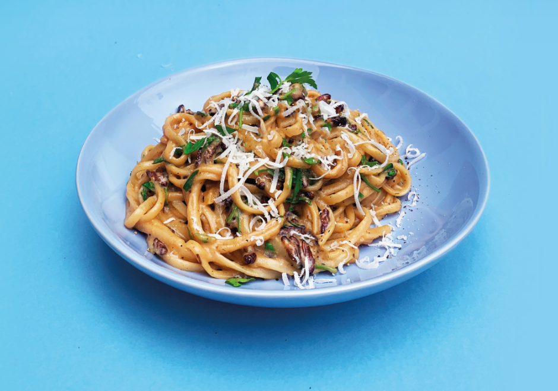

Cricket 'Bacon' Carbonara

This simple classic is perfect for a quick and delicious mid week meal.
With help from the vegan bacon seasoning the crickets actually tastes like
bacon – even offering a delicious crackling like crunch against the epic
creaminess of the pasta.
INGREDIENTS
- 30g Ready to Cook Dried Crickets
- 20g smoked garlic
- 20g smokey bacon seasoning (vegan)
- 4 egg yolks
- 100g Parmesan (grated)
- 200g spaghetti
- 25g butter
- 1 pack flat leaf parsley (chopped)
- Olive oil
- Salt and pepper
METHOD
- SEASON CRICKETS | 5mins
-
Add the crickets, smoked garlic, 1tbsp olive oil and smokey bacon
seasoning to a mixing bowl and stir to coat. In a separate bowl mix
the grated Parmesan and the egg yolks together to form a paste.
- BOIL PASTA | 10mins
-
Bring a pan of salted water to the boil and add the spaghetti, cook
for 10 mins or until al dente. Once cooked reserve 5 ladles of the
pasta cooking water before draining the pasta.
- FRY CRICKETS | 5mins
-
In a frying pan melt the butter with a dash of olive oil, once it’s
hot and foaming add the crickets and fry for 3-5 minutes until the
crickets are nice and crunchy - be careful not to burn!
- MIX & SERVE | 10mins
-
Once the crickets are cooked add the al dente spaghetti to the pan and
stir to coat. To help keep the pasta moist add two ladles of the pasta
water and bring to the boil.
-
Then stir in the egg and Parmesan mix until the cheese melts and the
pasta is well coated. Season with salt and pepper to taste. Add more
of the pasta water if needed to loosen the sauce - the water will
continue to evaporate on the plate so better have it slightly wet than
too dry.
- Stir through the chopped parsley and serve.